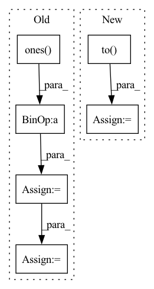

Pattern ID :25044
Before Change
y_zero_point = (level_low * input_high - level_high * input_low) / (input_high - input_low)
if level_low < 0:
level_low = torch.ones( [1]) .to(torch.int8) * level_low
level_high = torch.ones([1]).to(torch.int8) * level_high
level_low = level_low.to(y_zero_point.device)
level_high = level_high.to(y_zero_point.device)
y_zero_point = min(max(level_low, (y_zero_point.to(torch.int8))), level_high)
else:
level_low = torch.ones([1]).to(torch.uint8) * level_low
level_high = torch.ones([1]).to(torch.uint8) * level_highAfter Change
type_ = torch.int8 if level_low < 0 else torch.uint8
level_low *= torch.ones_like(y_zero_point).to(type_)
level_high *= torch.ones_like(y_zero_point).to( type_)
level_low = level_low.to(y_zero_point.device)
level_high = level_high.to(y_zero_point.device)
y_zero_point = torch.min(torch.max(level_low, y_zero_point.to(type_)), level_high)
In pattern: SUPERPATTERN
Frequency: 3
Non-data size: 6
Instances Fragment ID: 76860756
Project Name: openvinotoolkit/nncf
Commit Name: 23610df53be6cb3c36a8f5ec6aaf7ab8f4fc757e
Time: 2020-11-06
Author: aleksei.kashapov@intel.com
File Name: nncf/quantization/quantize_functions.py
M Class Name: AnonimousClass
N Class Name: AnonimousClass
M Method Name: get_scale_zp_from_input_low_input_high(4)
N Method Name: get_scale_zp_from_input_low_input_high(4)
M Parent Class:
N Parent Class:
M File Name: nncf/quantization/quantize_functions.py
N File Name: nncf/quantization/quantize_functions.py
M Start Line: 154
M End Line: 169
N Start Line: 153
N End Line: 164
Before Change
latent = self.shared_net(state)
// TODO: initialize pi_mean weights properly
mean_actions = self.actor_net(latent)
action_std = th.ones( mean_actions.size()) * self.log_std.exp()
action_distribution = Normal(mean_actions, action_std)
// Sample from the gaussian
if deterministic:
action = mean_actions
else:
action = action_distribution.rsample()
return action
def get_policy_stats(self, state, action):After Change
return log_prob
def actor_forward(self, state, deterministic=False):
state = th.FloatTensor(state).to( self.device)
latent = self.shared_net(state)
action, _ = self._get_action_dist_from_latent(latent, deterministic=deterministic)
return action.detach().cpu().numpy()
Fragment ID: 76860742
Project Name: dlr-rm/stable-baselines3
Commit Name: 26f0c8d8e5e568c0e1305df663808e6247c326ee
Time: 2019-09-19
Author: antonin.raffin@ensta.org
File Name: torchy_baselines/ppo/policies.py
M Class Name: PPOPolicy
N Class Name: PPOPolicy
M Method Name: actor_forward(3)
N Method Name: actor_forward(3)
M Parent Class: BasePolicy
N Parent Class: BasePolicy
M File Name: torchy_baselines/ppo/policies.py
N File Name: torchy_baselines/ppo/policies.py
M Start Line: 59
M End Line: 69
N Start Line: 75
N End Line: 78
Before Change
emission_pred, torch.tensor([-1e-38]).to(device)) // was -float("Inf"), changed & nan errors stopped (nan from logsumexpbackward)
// create "zero_plane" for next bit:
zero_plane = torch.unsqueeze(-1e-38* torch.ones( [batch_size, fb_max_length]) , dim = 2).to(device)
// put "zero_plane" at beginning of the emission probabilities to be put in
// the place of the "padding" phoneme (which has the index 0)
print(zero_plane.shape)
print(emission_pred_acc_x_length.shape)
emiss_pred_with_zeros = torch.cat((zero_plane, emission_pred_acc_x_length), 2)
phns = phns.to(device)
// manipulate y tensor, and then "torch.gather"After Change
emiss_pred_useful = torch.gather(emiss_pred_acc_lens, 2, phns_copied)
// apply mask based on phn_lens_abs
mask_phn_lens = (
torch.arange(U_max).to( device) [None, :] < phn_lens_abs[:, None]
)
emiss_pred_useful = torch.where(
mask_phn_lens[:, None, :], Fragment ID: 76860759
Project Name: speechbrain/speechbrain
Commit Name: cc600a8d98ce0d7f63e3ceef4dce88dbd7928a63
Time: 2020-06-01
Author: rastorge@eos18.server.mila.quebec
File Name: speechbrain/alignment/aligner.py
M Class Name: ViterbiAligner
N Class Name: ViterbiAligner
M Method Name: make_emiss_pred_useful(5)
N Method Name: make_emiss_pred_useful(5)
M Parent Class:
N Parent Class:
M File Name: speechbrain/alignment/aligner.py
N File Name: speechbrain/alignment/aligner.py
M Start Line: 104
M End Line: 123
N Start Line: 104
N End Line: 133